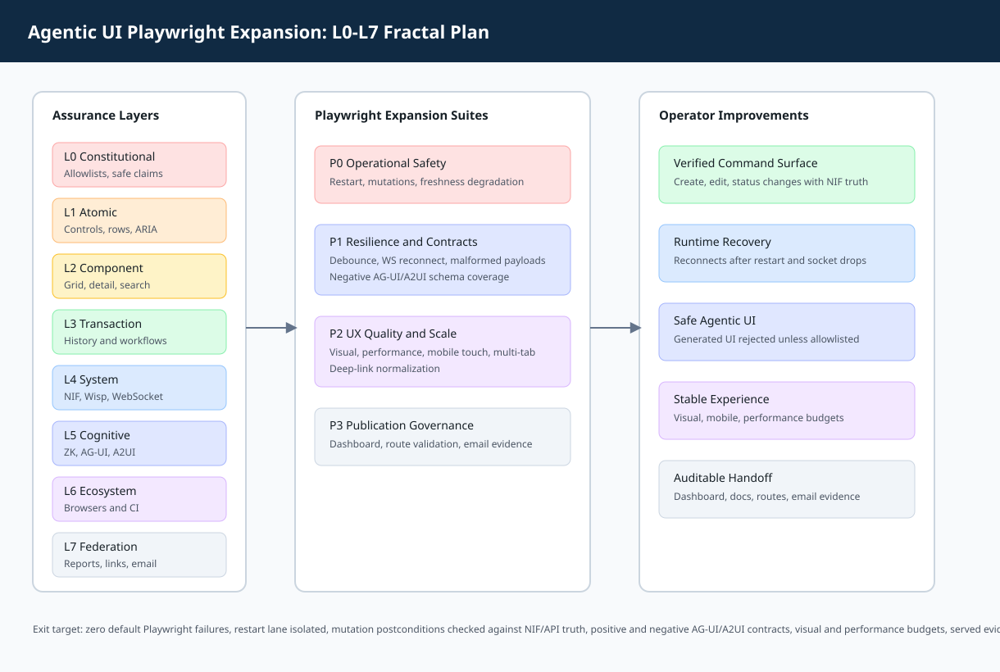

Executive Summary
The planning grid audit found the page operationally healthy across static rendering, dynamic interactions, NIF-backed status, AG-UI/A2UI contracts, WebSocket behavior, responsive layout, and cross-browser execution including WebKit. This bundle preserves the evidence and turns the remaining recommendations into a prioritized implementation roadmap.
Live audit48/48passed
Playwright full85passed, 5 opt-in skipped
Browser matrix5/5projects passed
Gleam tests9752passed
Bundle Inventory
| Artifact | Path | Purpose |
|---|---|---|
| Journal | 20260511-planning-grid-agentic-ui-full-coverage-journal.md | 13-section institutional record. |
| Fractal plan | 20260511-planning-grid-agentic-ui-playwright-fractal-plan.md | L0-L7 Agentic UI Playwright expansion plan. |
| Deck | 20260511-planning-grid-agentic-ui-full-coverage-deck.html | Operator slide summary. |
| ZK note | 20260511-planning-grid-agentic-ui-full-coverage-zk.md | Retrieval-ready knowledge note. |
| 20260511-planning-grid-agentic-ui-full-coverage-email.md | Notification sent through sa-plan to abhijit.naik@bountytek.com with command-level completion evidence. | |
| Index | 20260511-planning-grid-agentic-ui-full-coverage-index.html | Handoff navigation and verification commands. |
| Links manifest | task-116554277441926495-links.json | Machine-readable artifact map. |
Coverage Map
The current suite covers the main operator path and backend truth checks. The roadmap adds restart, mutation, malformed data, reconnection, visual, performance, and multi-tab coverage.

Open fractal expansion diagram
{kind=link}

Recommended Tests and Page Improvements
| Recommendation | Why required | Additional functionality validated | Page improvement |
|---|---|---|---|
| Controlled restart | Live systems restart. | WS reconnect and state recovery. | Operators keep live planning during daemon churn. |
| Mutation flows | Read-only tests do not prove writes. | Create, edit, status changes, NIF count updates. | Grid is verified as an operational editor. |
| Search debounce | Rapid typing can create stale results. | Latest query wins, old results suppressed. | ZK search becomes trustworthy under speed. |
| WS forced reconnect | Network drops happen. | Retry without duplicate listeners. | No manual refresh required for live updates. |
| Malformed/XSS payloads | Data can be corrupt or hostile. | Escaping and fallback handling. | Safer rendering and fewer broken panels. |
| Negative AG-UI/A2UI | Generated UI must be allowlisted. | Invalid events/components rejected. | Agentic UI remains constrained and predictable. |
| Visual regression | Selectors miss layout drift. | Screenshot thresholds across views. | Preserves scanability and control placement. |
| Performance budgets | Task volume can grow. | Hydration, filter, view switch timing. | Keeps grid fast under load. |
| Multi-tab behavior | Operators open several views. | Cross-context isolation or sync semantics. | Defines realistic command-center use. |
| Deep-link normalization | Shared URLs can be malformed. | Safe defaults for bad params. | Prevents blank states from bad links. |
Risk Register
| Risk | Status | Action |
|---|---|---|
| Restart test skipped by default | Known gap | Add controlled CI job with restart env enabled. |
| Email delivery receipt | Command-level only | Corrected send completed with attachments accepted; no SMTP delivery receipt was exposed by the CLI. |
| Artifact routes | Verified | Localhost, customer Tailscale, and internal HTTPS checks passed. |
| Unrelated dirty worktree entries | Existing | Stage only this bundle if staging is requested. |
Verification Commands
cd /home/an/dev/ver/c3i
jq empty docs/journal/task-116554277441926495-links.json
test -f docs/journal/20260511-planning-grid-agentic-ui-full-coverage-journal.md
test -f docs/journal/20260511-planning-grid-agentic-ui-full-coverage-analysis.html
test -f docs/journal/20260511-planning-grid-agentic-ui-full-coverage-deck.html
test -f docs/journal/20260511-planning-grid-agentic-ui-full-coverage-zk.md
test -f docs/journal/20260511-planning-grid-agentic-ui-full-coverage-email.md
test -f docs/journal/20260511-planning-grid-agentic-ui-full-coverage-index.html
./sa-plan status
./sa-plan sync
./sa-plan ingest-docs --dry-run